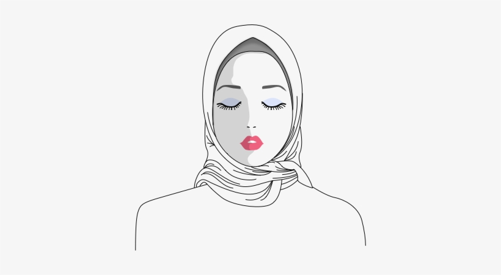

Selamat Datang! Haloo, saya memiliki nama lengkap Ayudyah Ratih Hapsari.
Dan juga nama panggilan Ratih atau Titih. Meimiliki nama panggilan yang akrab
untuk teman dekat yaitu Titih, merupakan anak kedua dari dua bersaudara.
Yang dilahirkan pada 10 Maret 1998 di Jakarta. Anak dari seorang bapak dan seorang ibu.
Kini sedang menempuh pendidikan Strata1 di Prodi Teknologi Pendidikan, UNJ.
Untuk mengenal lebih jauh, ayoo jelajah website ini...
